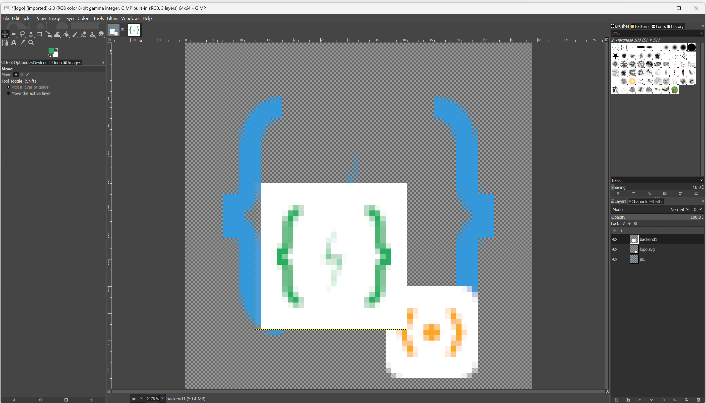

🧱 GIMP – Ebenen & Transparenz
Das Geheimnis professioneller Bildbearbeitung
🧠 1. Was sind Ebenen?
Stell dir Ebenen wie transparente Folien vor, die übereinander liegen. Jede Ebene kann unabhängig bearbeitet werden – ohne die anderen zu beeinflussen.

Das Auge-Symbol zeigt an, ob eine Ebene sichtbar ist.
➕ 2. Ebenen hinzufügen & bearbeiten
So arbeitest du mit Ebenen:
| Aktion | Wie geht’s? | Tipp |
|---|---|---|
| Neue Ebene | Klicke auf das „+“-Symbol im Ebenen-Dock | Benenne sie direkt (z. B. „Hintergrund“, „Text“) |
| Ebene auswählen | Klicke auf den Namen in der Liste | Nur die aktive Ebene wird bearbeitet! |
| Sichtbarkeit | Klicke auf das Auge-Symbol | Perfekt zum Testen von Effekten |
| Ebene löschen | Ziehe sie auf das Mülleimer-Symbol | Geht nicht rückgängig – Vorsicht! |
✂️ 3. Freigestellte Objekte in Ebenen umwandeln
Wenn du ein Objekt freistellst (z. B. mit dem Lasso), erscheint es zunächst als „schwebende Auswahl“. Diese ist nicht dauerhaft!
→ Klicke immer auf „In Ebene umwandeln“ (im Kontextmenü oder über
Strg+Umschalt+N).
🎨 4. Transparenz & Alpha-Kanal
Damit ein Hintergrund transparent wird (graues Schachbrettmuster), muss die Ebene einen Alpha-Kanal haben.
So fügst du ihn hinzu:
- Rechtsklick auf die Ebene im Ebenen-Dock
- Wähle „Alpha-Kanal hinzufügen“
- Nun kannst du Bereiche löschen → sie werden transparent
🔁 Tipp: Bei neuen Bildern ist der Alpha-Kanal oft bereits aktiviert.
➡️ 5. Vorbereitung auf das Abschlussprojekt
Im Abschlussprojekt wirst du:
- Eine Person vom Hintergrund freistellen
- Einen neuen Hintergrund in einer separaten Ebene platzieren
- Text oder Effekte in weiteren Ebenen hinzufügen
Dank Ebenen kannst du jederzeit Änderungen vornehmen – ohne von vorne zu beginnen.